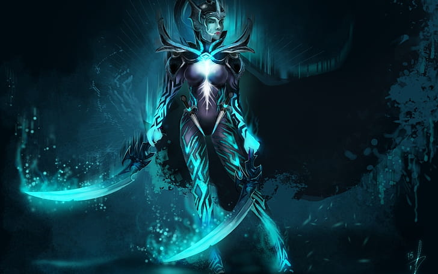
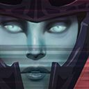
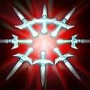

Phantom Assassin
Phantom Assassin — кор-герой, предпочитающий лёгкую линию. Главная задача — фармить до появления основных предметов. В большинстве случаев сразу покупается Desolator Desolator и Black King Bar Black King Bar. С этими артефактами и талантом «Атаки снижают броню на 3» на 20-м Phantom Assassin наносит большой урон в сражениях. Если ситуация в игре пассивная, то можно приобрести Battle Fury Battle Fury, чтобы ускорить фарм. Благодаря своим способностям Phantom Assassin может быстро зарабатывать золото и убивать вражеских героев. Stifling Dagger Stifling Dagger — кинжал, урон которого зависит от размера атаки Phantom Assassin, накладывает на цель замедление и модификации от предметов или способностей. На ранней стадии игры Stifling Dagger Stifling Dagger стоит использовать, чтобы добивать дальних крипов. Phantom Strike Phantom Strike телепортирует героя к выбранной цели и дает бонусную скорость атаки, если это был враг. Phantom Strike Phantom Strike позволяет быстро перемещаться между лагерями нейтральных крипов, что значительно экономит время при фарме леса. Также этой способностью можно начинать драку, прыгнув на противника, или выходить из нее, прыгнув на союзника. Blur Blur даёт пассивный шанс уклонения, а применение делает Phantom Assassin невидимой, если рядом нет героев противника (механика умения схожа с Smoke of Deceit Smoke of Deceit). Под этой способностью можно атаковать крипов, что позволяет безопаснее пушить линии и фармить лагеря древних без потерь здоровья. C Aghanim's Scepter Aghanim's Scepter Blur Blur развеивает отрицательные эффекты и получает уменьшенную перезарядку, а Phantom Assassin перезаряжает все свои способности после каждого убийства. Coup de Grace Coup de Grace дает Phantom Assassin шанс нанести критический урон с атак и Stifling Dagger Stifling Dagger.
Способности
Stifling Dagger
Бросает кинжал, который замедляет скорость передвижения врага, наносит физический урон в размере 65 + 25/40/55/70% от атаки героя, а также накладывает эффекты предметов и способностей.
Phantom Strike
Герой телепортируется к выбранному существу и, если это противник, получает дополнительные скорость атаки и вампиризм.
Blur
Герой сосредотачивается на себе, что позволяет ему уклоняться от атак. Применение способности размоет очертания владельца, делая его невидимым, если рядом нет вражеских героев. Сочетается с другими источниками уклонения по закону убывающей полезности.
Fan of Knives
Выпускает острые кинжалы в радиусе 550. Они наносят врагам урон в размере 16% от их максимального здоровья и накладывают истощение на 3 секунды.
Coup de Grace
Phantom Assassin оттачивает свои боевые способности, получая шанс нанести сокрушительный критический удар по врагу. Способность Stifling Dagger получает такой же шанс.